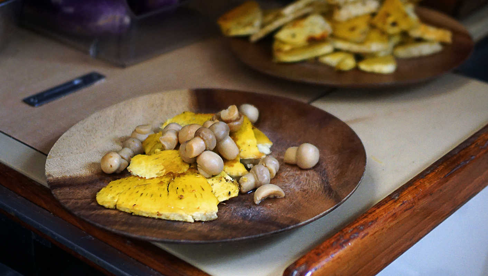

pan fried breadfruit
4 people — 90 minutes
Breadfruit trees are everywhere in French Polynesia, but sometimes the fruit aren’t mature enough to pick. To make things more difficult, grocery stores don’t sell them (they don’t sell fruit at all). The Polynesians don't buy fruit, they don't have to, they have plenty growing on their property. Getting our hands on a breadfruit was no simple task, on every island we would ask the locals, but again the fruit weren’t ready to pick off just yet.
We had breadfruit when we first arrived in Nuku Hiva, the owner of Snack Vaeki prepared some for us. The chef cooked it outside, over hot coals. The taste is hard to describe, it tastes like potato, but sweeter. We had the cooked breadfruit with some fresh coconut milk, extracted from a fresh coconut before our very eyes. Since then, we’ve been looking to cook it ourselves.
Then finally we got our chance! We bought a breadfruit at the Fare street market in Huahine. The seller at the fruit stand gave it a few knocks, and told us it was ready to eat! It was delicious with coconut milk, but we wanted to try something different. We cut the breadfruit into wedges and pan-fried it. We then served it with some button mushrooms, coated with sweetened soy sauce.
 breadfruit1, medium
breadfruit1, medium olive oil30 ml
olive oil30 ml
breadfruit
- Preheat oven to 220 °C (425 °F).
- Brush outside of breadfruit with olive oil.
- Wrap in aluminum foil, and bake for 1 hour.
- To check if it is ready, poke a knife through. If it is soft, it is ready.
- Remove foil, and peel skin away. Then, cut in half and scoop out the seed in the middle.
- Cut into wedges, and sautée in a pan with a bit of oil. Cook both sides until crispy and golden. Season with some salt and pepper.
 button mushrooms230g
button mushrooms230g soy sauce50 ml
soy sauce50 ml granulated sugar10 g
granulated sugar10 g
toppings
- Mix 60 ml (4 tbsp) soy sauce and 10 g (2 tsp) of sugar in a pan, stir, and cook on medium-heat for a few minutes. Add 230g of button mushrooms, and stir to coat them with the sauce. Serve over breadfruit wedges.